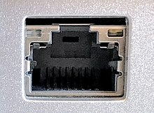

Que faut-il faire si je ne peut plus accéder à internet ?
-
Éteignez et rallumez votre ordinateur personnel,
le manque d’accès à internet peut être dût à un problème avec le port
et peut parfois être réglé par un redémarrage de votre ordinateur.
-
Si l’internet n’est toujours pas accessible vérifiez que le câble Ethernet (RJ45)
est bien branché.Si vous n’en avez pas, allez en acheter un.
Câble RJ45:
Port RJ45:

-
Si vous utilisez le WiFi, vérifiez que votre box/routeur fonctionne.
Si elle ne fonctionne pas vérifiez qu’elle est branché et si elle l’est alors redémarrez votre box/routeur et re-vérifiez si vous pouvez accéder à internet.
Si votre accès à internet est toujours compromis appelez votre fournisseur d’accès à internet (Bouygues, Orange, Free…) et demandez des informations concernant votre problème.
-
Le problème peut également être que votre carte réseau n’est pas activée,
voici comment la ré-activer :
Dans la barre de recherche de votre ordinateur "panneau" et cliquez sur le "panneau de configuration"

Ensuite dans le panneau de configuration cliquez sur "réseau et internet" puis "centre réseau et partage"


Une fois dans le centre réseau et partage cliquez sur "Modifier les paramètres de la carte"

Faites ensuite un clique-droit sur la carte "Ethernet"ou sur la carte "WiFi"
Ensuite cliquez sur "Activer"
-
Si vous avez toujours pas d’accès à votre internet allez voir un réparateur et faites réparer votre ordinateur.